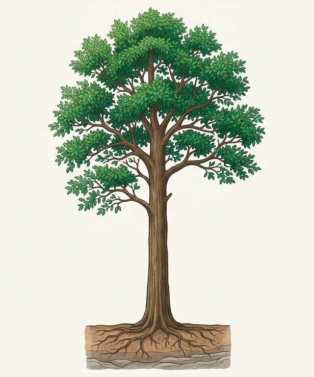

Làm thế nào nước đi từ rễ lên ngọn cây?
Ở module trước, nước và ion khoáng đã đi vào mạch gỗ của rễ. Nhưng ở một cây cao hàng chục mét, chúng tiếp tục được đưa từ rễ lên thân và lá bằng cách nào?
HƯỚNG DẪN: Nhấn vào hình cây để quan sát chiều vận chuyển của dòng mạch gỗ. Vùng đã xem sẽ được làm nổi bật.
Dòng vận chuyển đường dài
Để đưa nước và ion khoáng từ đất lên tán lá cao hàng chục mét, thực vật cần một hệ thống mạch dẫn chuyên hoá chịu áp lực lớn và các động lực vật lí phối hợp liên tục.

Nhấn vào hình cây để quan sát chiều vận chuyển của dòng mạch gỗ.